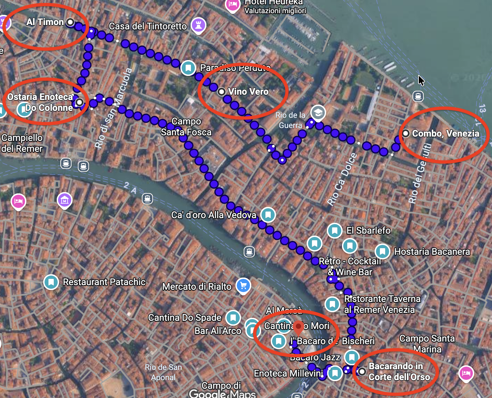

GIACOMO'S BIRTHDAY · VENEZIA
Bacaro Tour
Cinque tappe, un solo gruppo, Venezia a piedi.
LIVE · DOVE SIAMO
La posizione del gruppo apparirà qui.
PORTAMI QUI →
5TAPPE
12:00RITROVO
16:35+ULTIMA TAPPA
IL PERCORSO
COMBO → RIALTO

05 FEBBRAIO 2027
Le tappe
Gli orari sono indicativi: il LIVE avrà sempre la priorità. Se perdi il gruppo, apri questa pagina e guarda dove siamo.
GPS